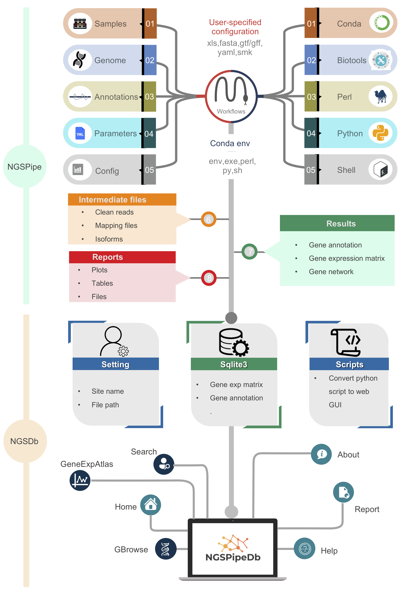

NGSPipeDb - NGS pipeline and database
Author: Dr. Xuan Zhang 

Last update: 2021-01-20
Citation: NGSPipeDb: An automated pipeline for parallel processing of huge NGS data and database generation.
Table of Contents:
- Introduction to NGSPipeDb
- System requirements
- Anatomy of a NGSPipeDb project
-
Basics: An example execution of RNA-seq analysis with test data
-
Advance: An example execution of RNA-seq analysis with custome data
- Reproducibility
- Troubleshooting
Introduction to NGSPipeDb
NGSPipeDb is an automated pipeline for parallel processing of huge next generation sequencing (NGS) data and database generation using snakemake workflow which allows for ease of use, optimal speed, and a highly modular code that can be further added onto and customized by experienced users. It can be further divided into NGSPipe and NGSDb for individual usage.
NGSPipe consists of a Snakefile (ngspipe/rnaseq.snakefile.py, it includes some basic rules ngspipe/rule/*.snakefile.py), conda environment files (ngspipe/envs/*.yaml), a configuration file (ngspipe/config/rnaseq.config.yaml), a set of python, R, Shell and Perl scripts (ngspipe/scripts/*.py), and a set of reStructuretext reports (reports/*.rst). It combines the use of several dozen omic-seq tools, suites, and packages to create a complete pipeline that takes RNA-seq analysis, resequcing analysis etc. from raw sequencing data all the way through alignment, quality control, unsupervised analyses, differential expression, and downstream pathway analysis. It is implemented such that alternative or similar analysis can be added or removed. The results are compiled in a simple and highly visual report containing the key figures to explain the analysis, and then compiles all of the relevant files, tables, and pictures into an easy to navigate folder. Table file such as csv, tsv, xlsx etc.
It is based on snakemake and includes the following tools: * shovill (based on Spades) * QUAST v.5 (including BUSCO) * mash * fastp
It will read untrimmed raw data from your illumina sequencing experiments as paired .fastq.gz-files. These are then trimmed, assembled and polished. Besides generating ready-for-use contigs, AQUAMIS will select the closest reference genome from NCBI RefSeq and produce an intuitive, detailed report on your data and assemblies to evaluate its reliability for further analyses. It relies on reference-based and reference-free measures such as coverage depth, gene content, genome completeness and contamination, assembly length and many more. Based on the experience from thousands of sequencing experiments, threshold sets for different species have been defined to detect potentially poor results.
In addition, NGSDb has been outfitted with several recently published tools that allow for visualize and data share.can be convert to Sqlite3 format. The Django project and apps can be orgined by user defined. It is easy to share your data with a web inteface. a set of apps (such as home, igv, geneExpAtlas, efp brwose).
By default, the NGSPipeDb performs all the steps shown in the diagram below. However, advanced user, you can easily modify the Snakefile and the config.yaml and/or add "custom rules" to enable additional functions.
{kind=link}

Currently, transcript quantification with Salmon at the read-level or gene quantification by featureCounts can be activated.
The first version handles RNA-Seq workflow.
Workflows available: - RNA-seq - ChIP-seq - Resequencing
TODO:
- NGSPipe
- miRNA
- scRNA-seq
- ATAC-seq
- NGSdb
- efp browser
System requirements
Building NGSPipeDb and running the examples require Linux, MacOS or Windows Subsystem for Linux (WSL) on Win10. Other Unix environments will probably work but have not been tested.
The test data can be run on personal computer, for example 8G memeory.
Some of the tools that NGSPipeDb uses, e.g. STAR and cufflinks are very memory intensive programs. Therefore we recommend the following system requirements for NGSPipeDb:
We recommend that you run NGSPipeDb on a server that has at least 30GB of ram. This will allow for a single-threaded NGSPipeDb run (on mouse samples).
We recommend that you have at least 128GB of ram and at least a 4-core CPU if you want to run NGSPipeDb in multi-threaded mode (which will speedup the workflow significantly). Our own servers have 256GB of ram and 32 cores.
Anatomy of a NGSPipeDb project
It is recommended to download NGSPipeDb source and change its name to your project name (For example: mv NGSPipeDb mouse_transcriptome_analysis), it may looks like the following structure (command: tree -d -L 2 mouse_transcriptome_analysis):
mouse_transcriptome_analysis
├── README.md
├── ngsdb
│ ├── blastplus
│ ├── db.sqlite3
│ ├── geneAnno
│ ├── geneExpAtlas
│ ├── home
│ ├── igv
│ ├── manage.py
│ └── ngsdb
├── ngspipe
│ ├── config
│ ├── db_generate.Snakefile.py
│ ├── envs
│ ├── imgs
│ ├── notebooks
│ ├── reports
│ ├── rnaseq_analysis.Snakefile.py
│ ├── rules
│ └── scripts
├── results
│ ├── report
│ ├── resultdata
│ └── sqlite3
└── testdata
The workflow code goes into a subfolder ngspipe, while the configuration is stored in a subfolder config. Inside of the workflow subfolder, the central Snakefile marks the entrypoint of the workflow. In addition to the central Snakefile, rules are stored in a modular way, using the optional subfolder ngspipe/rules. Further, scripts are stored in a subfolder workflow/scripts and notebooks in a subfolder workflow/notebooks. Conda environments are stored in a subfolder workflow/envs. Finally, report caption files are stored in workflow/report.
The database code goes into a subfolder ngsdb, while the manage.py is ngsdb's command-line utility for administrative tasks. A golabl setting file is stored under ngsdb/ngsdb, such as ngsdb/ngsdb/setting.py and ngsdb/ngsdb/urls.py. Many ngsdb function module take a app name. For example, if your INSTALLED_APPS in ngsdb/ngsdb/setting.py contains the string 'igv', the database will contain a page of IGV genome browser.
All output files generated in the workflow should be stored under results/result, unless they are rather retrieved report, in which case they should be stored under results/report. The latter subfolder results/sqlite3 contains Sqlite3 kind file that shall be used by ngsdb.
Basics: An example execution of RNA-seq analysis with test data
Advance: An example execution of RNA-seq analysis with custome data
Reproducibility
conda环境克隆conda create -n ngspipedb_py38_conda_env –clone ./ngspipedb_py38_conda_env/
- use conda env export
cd NGSPipeDB_source_code
# export to yaml
conda env export --no-builds -p ./ngspipedb_py38_conda_env >ngspipedb_py38_conda_env.yaml
- use conda pack
用–use-conda这个参数的话，因为所有软件的环境都是单独的，所有conda安装的时候不会出错，那么如果已经下载安装好了环境，用这种方式如何使用？默认的环境是.snakemake文件夹下，如何指定？ 用上面的方式好安装，不会出错，但是会导致文件很大，多大？ 是否能把一环境分成两部分？一部分软件集合起来变成一个大环境，另一部分软件就用–use-conda环境单独指定，但是这两种方式能结合到一起用吗？
# pack
cd NGSPipeDB_source_code
mamba install -c conda-forge conda-pack
conda pack -p ./ngspipedb_py38_conda_env -o ngspipedb_py38_conda_env_osx64.tar.gz
# unpack on another machine
mkdir -p ngspipedb_py38_conda_env
tar -xzf ngspipedb_py38_conda_env_osx64.tar.gz -C ngspipedb_py38_conda_env
source activate ./ngspipedb_py38_conda_env
conda-unpack
conda config –add channels https://mirrors.tuna.tsinghua.edu.cn/anaconda/pkgs/free/ conda config –add channels https://mirrors.tuna.tsinghua.edu.cn/anaconda/pkgs/main/ conda config –add channels https://mirrors.tuna.tsinghua.edu.cn/anaconda/cloud/conda-forge/ conda config –add channels https://mirrors.tuna.tsinghua.edu.cn/anaconda/cloud/bioconda/
-
activate base and set miniconda path conda init
-
Conda Prompt Customization conda config –set env_prompt '({name}) '
source ~/.bashrc
-
update conda, (optional) conda update conda
-
create conda visual environment, python version, snakemake version, env directory,django version conda create -p ngspipedb_py38_conda_env python=3.8
-
activate conda env conda activate ./ngspipedb_py38_conda_env
-
install mamba to make install software faster. conda install mamba -c conda-forge
-
update some bioinformatics tools we will use bellow. mamba env update –prefix ./ngspipedb_py38_conda_env/ –file requirement.yaml –prune
-
you can exit virtual environment by conda deactivate https://wooey.readthedocs.io/en/latest/install.html
–conda-frontend mamba 选择更快一点的mamba
–conda-create-envs-only 只创建环境，然后退出，不运行程序，这个可以用来专门测试环境
mac上的conda环境好像没有linux上面那么好用，特别是anaconda创建的环境 –conda-prefix 指定conda环境安装地址 清理conda安装包和缓存 snakemake -s ngspipe/db_generate.Snakefile.py –use-conda –conda-prefix condaEnvSplit -p -j1
Simplest is just abandon the –use-conda flag, as suggested in the answer. Alternatively, you could make a container that has the env pre-created and configured, then use –use-singularity. Or, if the post-installation can be automated, one could build a custom Conda package that runs some post-linking scripts. Sorry I seem to have missed your comment!
snakemake 如何运行单个程序？这个也很有用 基因的命令，像dkango这样的命令在很多rules中都有，所有比如有个顶层的环境中安装了django
Troubleshooting
Ngsdb.yaml+wooey Python=3.8 samtools clustergrammer Pip install wooey pip install pandas==0.25.3
Contributing
Please submit an issue to report bugs or ask questions.
Please contribute bug fixes or new features with a pull request to this repository.
If this does not help, please feel free to consult: * Xuan Zhang (zhangxuan@xtbg.ac.cn) or